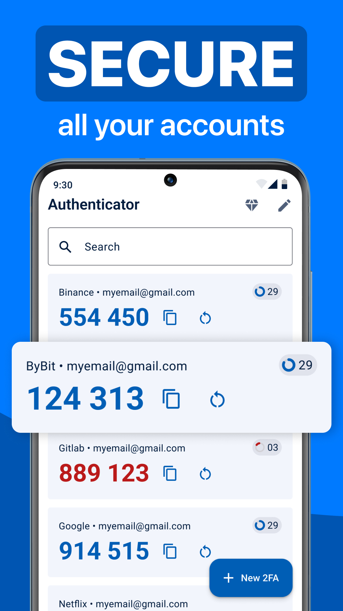
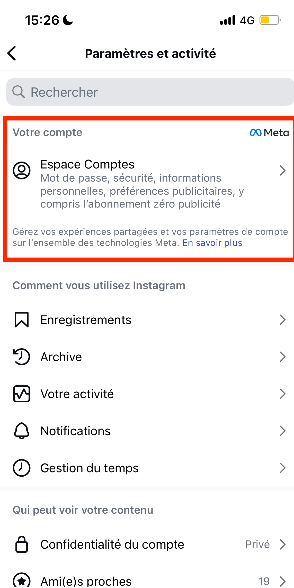
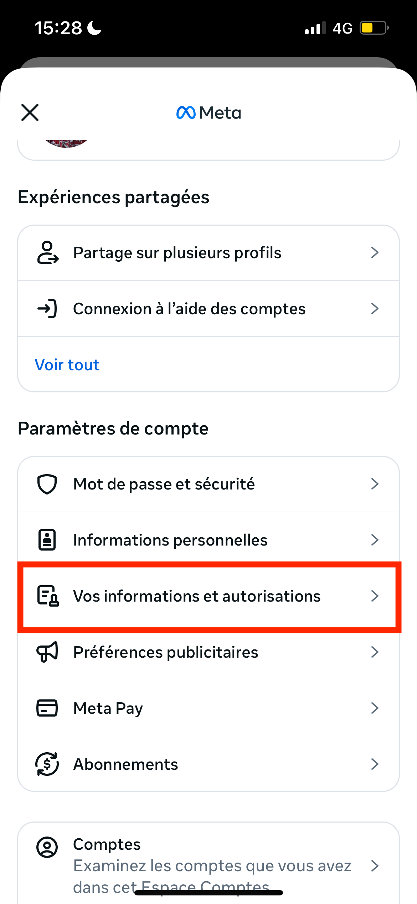
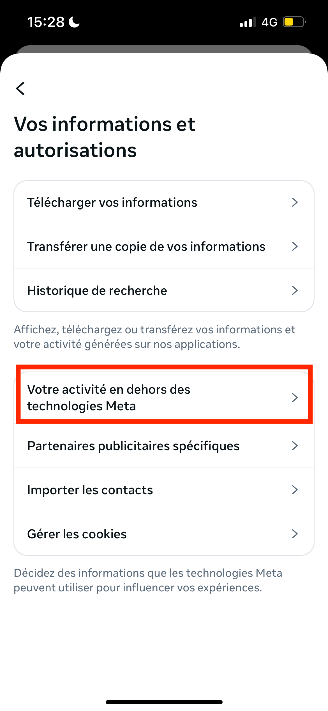
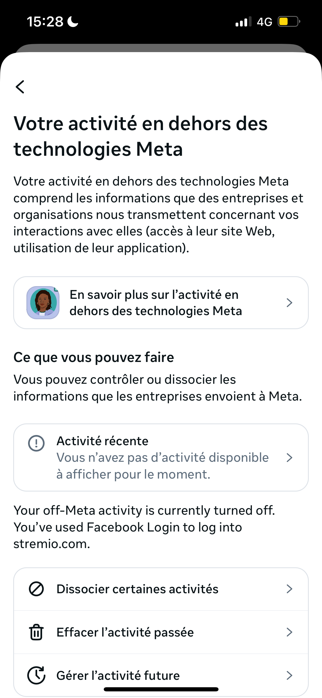

<!DOCTYPE html>
<html lang="en">
  <head>
    <meta charset="utf-8" />
    <meta name="viewport" content="width=device-width, initial-scale=1.0, maximum-scale=1.0, user-scalable=no" />

    <title></title>
    <link rel="stylesheet" href="dist/reveal.css" />
    <link rel="stylesheet" href="css/sunblind.css" id="theme" />
    <link rel="stylesheet" href="plugin/highlight/zenburn.css" />
	<link rel="stylesheet" href="css/layout.css" />
	<link rel="stylesheet" href="plugin/customcontrols/style.css">
	<link rel="stylesheet" href="plugin/chalkboard/style.css">

	<link rel="stylesheet" href="plugin/reveal-pointer/pointer.css" />


    <script defer src="dist/fontawesome/all.min.js"></script>

	<script type="text/javascript">
		var forgetPop = true;
		function onPopState(event) {
			if(forgetPop){
				forgetPop = false;
			} else {
				parent.postMessage(event.target.location.href, "app://obsidian.md");
			}
        }
		window.onpopstate = onPopState;
		window.onmessage = event => {
			if(event.data == "reload"){
				window.document.location.reload();
			}
			forgetPop = true;
		}

		function fitElements(){
			const itemsToFit = document.getElementsByClassName('fitText');
			for (const item in itemsToFit) {
				if (Object.hasOwnProperty.call(itemsToFit, item)) {
					var element = itemsToFit[item];
					fitElement(element,1, 1000);
					element.classList.remove('fitText');
				}
			}
		}

		function fitElement(element, start, end){

			let size = (end + start) / 2;
			element.style.fontSize = `${size}px`;

			if(Math.abs(start - end) < 1){
				while(element.scrollHeight > element.offsetHeight){
					size--;
					element.style.fontSize = `${size}px`;
				}
				return;
			}

			if(element.scrollHeight > element.offsetHeight){
				fitElement(element, start, size);
			} else {
				fitElement(element, size, end);
			}		
		}


		document.onreadystatechange = () => {
			fitElements();
			if (document.readyState === 'complete') {
				if (window.location.href.indexOf("?export") != -1){
					parent.postMessage(event.target.location.href, "app://obsidian.md");
				}
				if (window.location.href.indexOf("print-pdf") != -1){
					let stateCheck = setInterval(() => {
						clearInterval(stateCheck);
						window.print();
					}, 250);
				}
			}
	};


        </script>
  </head>
  <body>
    <div class="reveal">
      <div class="slides"><section  data-markdown><script type="text/template"><!-- .slide: class="drop" data-background-image="https://cdn.pixabay.com/photo/2017/05/10/12/41/hacker-2300772_1280.jpg" -->
<div class="" style="position: absolute; left: 0px; top: 0px; height: 700px; width: 960px; min-height: 700px; display: flex; flex-direction: column; align-items: center; justify-content: center" absolute="true">

# 4 Protection et sécurité <!-- .element: style="opacity: 0.9; padding: 2rem; background-color: white" class="has-light-background" -->
</div></script></section><section  data-markdown><script type="text/template"><!-- .slide: class="drop" data-background-image="https://cdn.pixabay.com/photo/2017/05/10/12/41/hacker-2300772_1280.jpg" -->
<div class="" style="position: absolute; left: 0px; top: 0px; height: 700px; width: 960px; min-height: 700px; display: flex; flex-direction: column; align-items: center; justify-content: center" absolute="true">

<div class="block">

## Introduction

-  Utiliser les **nouvelles technologies entraîne des risques pour la sécurité de nos données**, notamment personnelles et bancaires.
-  Il est crucial de connaître ces risques, surtout en **environnement professionnel**, pour s’en prémunir.

</div>

 <!-- .element: style="background: white; padding: 2rem" -->
</div></script></section><section  data-markdown><script type="text/template"><!-- .slide: class="drop" -->
<div class="" style="position: absolute; left: 0px; top: 0px; height: 700px; width: 960px; min-height: 700px; display: flex; flex-direction: column; align-items: center; justify-content: center" absolute="true">

## I. Sécuriser l’Environnement Numérique

> Sécuriser équipements, communications et données pour éviter attaques, incidents, malwares, et protéger transactions et informations.
</div></script></section><section  data-markdown><script type="text/template"><!-- .slide: class="drop" -->
<div class="" style="position: absolute; left: 0px; top: 0px; height: 700px; width: 960px; min-height: 700px; display: flex; flex-direction: column; align-items: center; justify-content: center" absolute="true">

### Plan

1. Mots de passe & authentification
1. &shy;<!-- .element: class="fragment" data-fragment-index="1" -->Logiciels malveillants
1. &shy;<!-- .element: class="fragment" data-fragment-index="2" -->Chiffrement des connexions et des données
</div></script></section><section ><section data-markdown><script type="text/template"><!-- .slide: class="drop" -->
<div class="" style="position: absolute; left: 0px; top: 0px; height: 700px; width: 960px; min-height: 700px; display: flex; flex-direction: column; align-items: center; justify-content: center" absolute="true">

### 1. Mots de passe et Authentification

-  La multiplication des services en ligne nécessite des stratégies d’authentification solides.
- Impossible de retenir tous les mots de passe
</div>

</script></section><section data-markdown><script type="text/template"><!-- .slide: class="drop" -->
<div class="" style="position: absolute; left: 0px; top: 0px; height: 700px; width: 960px; min-height: 700px; display: flex; flex-direction: column; align-items: center; justify-content: center" absolute="true">

<div class="block">

| Rang | Mot de passe      | Temps nécessaire pour déchiffrer  |
|:-----|:-------------|:-------------------|
| 1    | 123456       | < 1 seconde        | 68 703 |
| 2    | 123456789    | < 1 seconde        | 35 780 |
| 3    | azerty       | < 1 seconde        | 29 248 |
| 4    | qwerty123    | < 1 seconde        | 22 784 |
| 5    | qwerty1      | < 1 seconde        | 20 987 |
| 6    | azertyuiop   | 1 minute           | 13 797 |
| 7    | marseille    | 1 jour             | 11 229 |
| 8    | doudou       | < 1 seconde        | 9 533  |
| 9    | loulou       | < 1 seconde        | 9 462  |
| 10   | 12345678     | < 1 seconde        | 8 428  |

</div>

 <!-- .element: style="font-size: 1.75rem" -->


<small>[Analyse NordPass](https://nordpass.com/fr/most-common-passwords-list/) sur les mots de passe les plus utilisés en France</small>
</div></script></section><section data-markdown><script type="text/template"><!-- .slide: class="drop" -->
<div class="" style="position: absolute; left: 0px; top: 0px; height: 700px; width: 960px; min-height: 700px; display: flex; flex-direction: column; align-items: center; justify-content: center" absolute="true">

<div class="block">

| | | |
|-|-|-|
| 11   | 1234561      | < 1 seconde        | 8 116  |
| 12   | 000000       | < 1 seconde        | 7 901  |
| 13   | chouchou     | < 1 seconde        | 7 755  |
| 14   | motdepasse   | 14 heures          | 6 965  |
| 15   | soleil       | < 1 seconde        | 6 679  |
| 16   | mypassphrase | 6 jours            | 6 572  |
| 17   | 1234567      | < 1 seconde        | 6 038  |
| 18   | password     | < 1 seconde        | 5 941  |
| 19   | nicolas      | 3 secondes         | 5 916  |
| 20   | camille      | 17 minutes         | 5 807  |

</div>

 <!-- .element: style="font-size: 1.75rem" -->
</div></script></section><section data-markdown><script type="text/template"><!-- .slide: class="drop" -->
<div class="" style="position: absolute; left: 0px; top: 0px; height: 700px; width: 960px; min-height: 700px; display: flex; flex-direction: column; align-items: center; justify-content: center" absolute="true">

#### Quelques recommandations initiales

- Utiliser un gestionnaire de mot de passe :
	- recommandation de l'ANSSI : **KeePass** ou **LockPass**.
	- Aussi : Bitwarden, Mots de passe (Apple)
- Utiliser des mots de passe sécurisés & différents pour chaque compte.
	- Dans la mesure du possible : mdp aléatoires.
</div></script></section></section><section  data-markdown><script type="text/template"><!-- .slide: class="drop" -->
<div class="" style="position: absolute; left: 0px; top: 0px; height: 700px; width: 960px; min-height: 700px; display: flex; flex-direction: column; align-items: center; justify-content: center" absolute="true">

#### Caractéristiques d’un mot de passe sécurisé

-  Un mot de passe différent pour chaque compte
-  Longueur minimale : 12 caractères (ou mieux, une phrase de passe)
-  Éviter infos personnelles ou facilement traçables
-  Combiner majuscules, minuscules, chiffres, caractères spéciaux
-  Modifier dès le moindre doute
-  **Ne jamais partager votre mot de passe**
- Attention aux ordinateurs partagés

> *Source : [Cybermalveillance](https://www.cybermalveillance.gouv.fr/tous-nos-contenus/actualites/comment-choisir-un-bon-mot-de-passe)*
</div></script></section><section ><section data-markdown><script type="text/template"><!-- .slide: class="drop" -->
<div class="" style="position: absolute; left: 0px; top: 0px; height: 700px; width: 960px; min-height: 700px; display: flex; flex-direction: column; align-items: center; justify-content: center" absolute="true">

#### Authentification à Deux Facteurs (2FA)

<split even gap="1">

<div class="block">

-  Ajoute une étape pour renforcer la sécurité (`SMS`, application d’authentification, clé YubiKey)
-  **Avantages** : protection accrue, limite les accès non autorisés

</div>

 <!-- .element: style="width: 500px; padding-top: 6rem" -->




</split>
</div>

</script></section><section data-markdown><script type="text/template"><!-- .slide: class="drop" -->
<div class="" style="position: absolute; left: 0px; top: 0px; height: 700px; width: 960px; min-height: 700px; display: flex; flex-direction: column; align-items: center; justify-content: center" absolute="true">


<small>YubiKey 4</small>
</div></script></section></section><section ><section data-markdown><script type="text/template"><!-- .slide: class="drop" -->
<div class="" style="position: absolute; left: 0px; top: 0px; height: 700px; width: 960px; min-height: 700px; display: flex; flex-direction: column; align-items: center; justify-content: center" absolute="true">

#### Authentification Unique (SSO)

-  Connexion via un seul service (ex : GitHub, Google, Microsoft)
-  **Avantages** : moins de mots de passe à gérer, simplification sécurité
-  **Critiques** : partage des données, contrôle limité

> [Vidéo explicative](https://www.youtube.com/watch?v=oX8T4imJESg)
</div>

</script></section><section data-markdown><script type="text/template"><!-- .slide: class="drop" -->
<div class="" style="position: absolute; left: 0px; top: 0px; height: 700px; width: 960px; min-height: 700px; display: flex; flex-direction: column; align-items: center; justify-content: center" absolute="true">

##### Autre exemple - FranceConnect


</div></script></section><section data-markdown><script type="text/template"><!-- .slide: class="drop" -->
<div class="" style="position: absolute; left: 0px; top: 0px; height: 700px; width: 960px; min-height: 700px; display: flex; flex-direction: column; align-items: center; justify-content: center" absolute="true">

##### L'identité numérique par La Poste

[](https://franceconnect.gouv.fr/l-identite-numerique-la-poste)
</div></script></section><section data-markdown><script type="text/template"><!-- .slide: class="drop" -->
<div class="" style="position: absolute; left: 0px; top: 0px; height: 700px; width: 960px; min-height: 700px; display: flex; flex-direction: column; align-items: center; justify-content: center" absolute="true">

##### FranceIdentité

- Nécessite la carte d'identité nouvelle génération


</div></script></section></section><section  data-markdown><script type="text/template"><!-- .slide: class="drop" -->
<div class="" style="position: absolute; left: 0px; top: 0px; height: 700px; width: 960px; min-height: 700px; display: flex; flex-direction: column; align-items: center; justify-content: center" absolute="true">

#### Logiciels Malveillants et Menaces

<div class="block">

| Type            | Description | Objectif                                    |
|----------------|--------------|----------------------------------------------|
| Malware        | Programmes malveillants | Vol de données, destruction          |
| Virus          | Se réplique, nécessite intervention | Destruction, vol, corruption  |
| Ver            | Se propagent via réseau | Infections automatiques, destruction, vol           |
| Ransomware     | Blocage et demande de rançon | Rançon, extorsion                   |
| Spyware        | Espionnage actif | Vol de données personnelles          |
| Cheval de Troie| Malware camouflé | Potentiel d’accès distant, dévoiement |


</div>

 <!-- .element: style="font-size: 1.5rem; margin-top: 1.5rem" -->
</div></script></section><section  data-markdown><script type="text/template"><!-- .slide: class="drop" -->
<div class="" style="position: absolute; left: 0px; top: 0px; height: 700px; width: 960px; min-height: 700px; display: flex; flex-direction: column; align-items: center; justify-content: center" absolute="true">

### Rançongiciel (*ransomware*) - que faire ?


1. **Débrancher la machine d’Internet ou du réseau informatique**
2. **Ne pas payer pas la rançon** (pas certain de récupérer les données)
3. **Conserver ou faire conserver les preuves par un professionnel**
4. **Déposer plainte**
5. **Identifier la source de l’infection et prendre les mesures nécessaires pour qu’elle ne puisse pas se reproduire.**
6. **Faire une analyse antivirale complète de l'appareil**
7. **Essayez de déchiffrer les fichiers si une solution existe**.
	1. [No More Ransom](https://www.nomoreransom.org/fr/index.html)
8. **Réinstaller les systèmes touchés** (si possible).
</div>

</script></section><section ><section data-markdown><script type="text/template"><!-- .slide: class="drop" -->
<div class="" style="position: absolute; left: 0px; top: 0px; height: 700px; width: 960px; min-height: 700px; display: flex; flex-direction: column; align-items: center; justify-content: center" absolute="true">

##### Techniques de Protection
</div></script></section><section data-markdown><script type="text/template"><!-- .slide: class="drop" -->
<div class="" style="position: absolute; left: 0px; top: 0px; height: 700px; width: 960px; min-height: 700px; display: flex; flex-direction: column; align-items: center; justify-content: center" absolute="true">

###### Antivirus

- Logiciel pour détecter, neutraliser malwares.
- Utilise une base de *signatures* qui contient les définitions ou empreintes des virus répertoriés. Pour être efficace : doit être mise régulièrement à jour ;
-  **Exemples** : Avast, Kaspersky, Norton, MalwareBytes
</div>

</script></section><section data-markdown><script type="text/template"><!-- .slide: class="drop" -->
<div class="" style="position: absolute; left: 0px; top: 0px; height: 700px; width: 960px; min-height: 700px; display: flex; flex-direction: column; align-items: center; justify-content: center" absolute="true">

###### Pare-feu

-  Controle flux entrants et sortants
-  Sur PC ou routeur – essentiel pour bloquer les accès indésirables
</div>

</script></section><section data-markdown><script type="text/template"><!-- .slide: class="drop" -->
<div class="" style="position: absolute; left: 0px; top: 0px; height: 700px; width: 960px; min-height: 700px; display: flex; flex-direction: column; align-items: center; justify-content: center" absolute="true">

###### Bonnes pratiques

- Antivirus à jour
- Pare-feu actif
- Mises à jour régulières
- Téléchargements sécurisés
	- vérifier la source du téléchargement et la fiabilité du site <!-- .element: style="font-size: 1.75rem" -->
- Navigation prudente
</div></script></section></section><section  data-markdown><script type="text/template"><!-- .slide: class="drop" data-background-image="https://images.unsplash.com/photo-1547190027-9156686aa2f0?q=80&w=2070&auto=format&fit=crop&ixlib=rb-4.1.0&ixid=M3wxMjA3fDB8MHxwaG90by1wYWdlfHx8fGVufDB8fHx8fA%3D%3D" -->
<div class="" style="position: absolute; left: 0px; top: 0px; height: 700px; width: 960px; min-height: 700px; display: flex; flex-direction: column; align-items: center; justify-content: center" absolute="true">

#### Chiffrement des connexions et des données <!-- .element: style="padding: 2rem; opacity: 0.8; background-color: white" class="has-light-background" -->
</div></script></section><section  data-markdown><script type="text/template"><!-- .slide: class="drop" -->
<div class="" style="position: absolute; left: 0px; top: 0px; height: 700px; width: 960px; min-height: 700px; display: flex; flex-direction: column; align-items: center; justify-content: center" absolute="true">

##### Chiffrement des communications


<small>Machine Enigma, utilisée par le régime nazi durant la WWII</small>
</div></script></section><section ><section data-markdown><script type="text/template"><!-- .slide: class="drop" -->
<div class="" style="position: absolute; left: 0px; top: 0px; height: 700px; width: 960px; min-height: 700px; display: flex; flex-direction: column; align-items: center; justify-content: center" absolute="true">


<small>CNIL</small>
</div></script></section><section data-markdown><script type="text/template"><!-- .slide: class="drop" -->
<div class="" style="position: absolute; left: 0px; top: 0px; height: 700px; width: 960px; min-height: 700px; display: flex; flex-direction: column; align-items: center; justify-content: center" absolute="true">

###### Confidentialité

- Usage historique de la cryptographie
- Message est *chiffré* - rendu illisible pour quelqu'un qui ne dispose pas de la clé de déchiffrement.
- **Deux familles de chiffrement** : 
	- *Symétrique* : une seule et même clé permet le chiffrement.
	- *Asymétrique*. Deux paires de clés : privée & publique.
</div></script></section><section data-markdown><script type="text/template"><!-- .slide: class="drop" -->
<div class="" style="position: absolute; left: 0px; top: 0px; height: 700px; width: 960px; min-height: 700px; display: flex; flex-direction: column; align-items: center; justify-content: center" absolute="true">

###### Intégrité

- Chiffrement permet de calculer une *signature* / *empreinte* numérique du fichier
	- permet de comparer avec le calcul produit par le développeur ou de vérifier que le téléchargement sur le cloud s'est bien déroulé
- Fonction de *hachage* - impossible de revenir à l'état antérieur.
</div></script></section><section data-markdown><script type="text/template"><!-- .slide: class="drop" -->
<div class="" style="position: absolute; left: 0px; top: 0px; height: 700px; width: 960px; min-height: 700px; display: flex; flex-direction: column; align-items: center; justify-content: center" absolute="true">

###### Authenticité

- Pouvoir s'assurer de l'authenticité d'un message : avec un signature numérique.
</div></script></section></section><section ><section data-markdown><script type="text/template"><!-- .slide: class="drop" -->
<div class="" style="position: absolute; left: 0px; top: 0px; height: 700px; width: 960px; min-height: 700px; display: flex; flex-direction: column; align-items: center; justify-content: center" absolute="true">

##### Méthodes de cryptologie aujourd'hui

- Chiffrement symétrique 
	- Ex. code César : `Fxowxuh qxphultxh`
	- Ex. AES (*Advanced Encryption Standard*)
- Chiffrement asymétrique 
	- Ex. RSA (Ronald Rivest, Adi Shamir et Leonard Adleman)

ex. [chiffrement des connexions internet - TLS](https://www.youtube-nocookie.com/embed/_6ukY5p6vTY)
</div>

</script></section><section data-markdown><script type="text/template"><!-- .slide: class="drop" -->
<div class="" style="position: absolute; left: 0px; top: 0px; height: 700px; width: 960px; min-height: 700px; display: flex; flex-direction: column; align-items: center; justify-content: center" absolute="true">


</div>

</script></section></section><section  data-markdown><script type="text/template"><!-- .slide: class="drop" -->
<div class="" style="position: absolute; left: 0px; top: 0px; height: 700px; width: 960px; min-height: 700px; display: flex; flex-direction: column; align-items: center; justify-content: center" absolute="true">


<small>Source: [Proton](https://proton.me/blog/fr/tls-ssl-certificate)</small>
</div></script></section><section  data-markdown><script type="text/template"><!-- .slide: class="drop" data-background-image="https://cdn.pixabay.com/photo/2017/05/17/14/03/ransomware-2320941_1280.jpg" -->
<div class="" style="position: absolute; left: 0px; top: 0px; height: 700px; width: 960px; min-height: 700px; display: flex; flex-direction: column; align-items: center; justify-content: center" absolute="true">

<div class="block">

#### Les données chiffrées dans le cloud

- [**E2EE**](https://en.wikipedia.org/wiki/End-to-end_encryption) - le chiffrement et déchiffrement se fait *sur la machine* des utilisateurs ;
- **Server Side Encryption** - le chiffrement est fait grâce à une clé qui se trouve sur le serveur.

</div>

 <!-- .element: style="padding: 2rem; background-color: white" class="has-light-background" -->
</div>

</script></section><section  data-markdown><script type="text/template"><!-- .slide: class="drop" -->
<div class="" style="position: absolute; left: 0px; top: 0px; height: 700px; width: 960px; min-height: 700px; display: flex; flex-direction: column; align-items: center; justify-content: center" absolute="true">

##### Protection des données
-  Disques chiffrés (BitLocker, FileVault)
-  Stockage sécurisé sur le cloud ou local
</div></script></section><section ><section data-markdown><script type="text/template"><!-- .slide: class="drop" -->
<div class="" style="position: absolute; left: 0px; top: 0px; height: 700px; width: 960px; min-height: 700px; display: flex; flex-direction: column; align-items: center; justify-content: center" absolute="true">

##### Application du chiffrement : la sécurité sur les réseaux Wifi publics

-  **Risques** : MITM, faux réseaux, logiciels espions
</div>

</script></section><section data-markdown><script type="text/template"><!-- .slide: class="drop" -->
<div class="" style="position: absolute; left: 0px; top: 0px; height: 700px; width: 960px; min-height: 700px; display: flex; flex-direction: column; align-items: center; justify-content: center" absolute="true">

###### Ex. Man in the middle


<small>Source : [PandaSecurity](https://www.pandasecurity.com/fr/mediacenter/attaque-man-in-the-middle/)</small>
</div></script></section><section data-markdown><script type="text/template"><!-- .slide: class="drop" -->
<div class="" style="position: absolute; left: 0px; top: 0px; height: 700px; width: 960px; min-height: 700px; display: flex; flex-direction: column; align-items: center; justify-content: center" absolute="true">

- Le chiffrement des connexions via le **protocole TLS (HTTPS)** suffit d'éviter une grande partie des attaques. 
- Le plus gros risque est **humain** : ne pas faire confiance aveugle aux portails d'authentification.
</div>

</script></section><section data-markdown><script type="text/template"><!-- .slide: class="drop" -->
<div class="" style="position: absolute; left: 0px; top: 0px; height: 700px; width: 960px; min-height: 700px; display: flex; flex-direction: column; align-items: center; justify-content: center" absolute="true">

!(https://static.semrush.com/blog/uploads/media/96/c5/96c5be8cdae90105153eb58da7f00c89/FR-HTTP-HTTPS.jpg)
</div></script></section><section data-markdown><script type="text/template"><!-- .slide: class="drop" -->
<div class="" style="position: absolute; left: 0px; top: 0px; height: 700px; width: 960px; min-height: 700px; display: flex; flex-direction: column; align-items: center; justify-content: center" absolute="true">

##### Portail "captif"

!(https://www.eff.org/files/2017/08/09/starbucks.png)
</div></script></section></section><section  data-markdown><script type="text/template"><!-- .slide: class="drop" -->
<div class="" style="position: absolute; left: 0px; top: 0px; height: 700px; width: 960px; min-height: 700px; display: flex; flex-direction: column; align-items: center; justify-content: center" absolute="true">

##### Un point sur les VPN

Qui utilise un VPN ? 


<small>Source : Axis Solutions</small>
</div></script></section><section  data-markdown><script type="text/template"><!-- .slide: class="drop" -->
<div class="" style="position: absolute; left: 0px; top: 0px; height: 700px; width: 960px; min-height: 700px; display: flex; flex-direction: column; align-items: center; justify-content: center" absolute="true">

- Service qui fait passer le traffic internet par un **serveur tiers** ;
- On parle de **tunnel** : désigne le fait que les informations de connexion sont **empactées** dans une requête adressée au serveur VPN ;
- Largement utilisé dans le monde professionnel pour accéder aux ressources des entreprises à distance
- Croissance de l'usage par le grand public pour se **protéger sa vie privée**.
</div></script></section><section  data-markdown><script type="text/template"><!-- .slide: class="drop" -->
<div class="" style="position: absolute; left: 0px; top: 0px; height: 700px; width: 960px; min-height: 700px; display: flex; flex-direction: column; align-items: center; justify-content: center" absolute="true">

##### Vrai et FAux

1. **Un VPN protège du piratage** ? 
	- Le VPN ne protège pas contre les sites malveillants et le phishing <!-- .element: class="fragment" data-fragment-index="2" -->
2. **Un VPN protège les données personnelles** ? 
	- Les données sont déchiffrées par le serveur VPN qui voit les métadonnées des recherches (déplacement de la confiance). Les données qui sont transmises aux sites consultés sont... transmises aux sites, VPN ou non ;<!-- .element: class="fragment" data-fragment-index="3" -->
3. **Un VPN permet d'être anonyme** ?
	- Le VPN empêche effectivement que le serveur de destination ne voit notre adresse IP. Mais pas la seule manière d'identifier les internautes (fingerprinting)  <!-- .element: class="fragment" data-fragment-index="4" -->
</div></script></section><section  data-markdown><script type="text/template"><!-- .slide: class="drop" -->
<div class="" style="position: absolute; left: 0px; top: 0px; height: 700px; width: 960px; min-height: 700px; display: flex; flex-direction: column; align-items: center; justify-content: center" absolute="true">

###### Alors, VPN ou pas ?

- **Utile** 
	- Contournement des blocages géographiques 
	- Accès à des ressources distantes (VPN d'entreprise, serveur personnel)
- **Peu utile**
	- Anonymat 
	- Protection des données personnelles
</div></script></section><section  data-markdown><script type="text/template"><!-- .slide: class="drop" -->
<div class="" style="position: absolute; left: 0px; top: 0px; height: 700px; width: 960px; min-height: 700px; display: flex; flex-direction: column; align-items: center; justify-content: center" absolute="true">

##### Conclusion et recommandations

  - Vérifier que les sites consultés sont servis en HTTPS
  - Éviter de saisir des infos sensibles, notamment sur les portails captifs
  - Préférer les **réseaux sécurisés ou personnels**

<div class="block">

**Remarque** : la sécurité reste relative, restez vigilants même si le réseau semble fiable. 
</div>

 <!-- .element: style="margin-top: 4rem; background: lightgrey; padding: 1.5rem" -->
</div></script></section><section  data-markdown><script type="text/template"><!-- .slide: class="drop" data-background-image="https://images.unsplash.com/photo-1663789669038-ba180c8c155a?q=80&w=2128&auto=format&fit=crop&ixlib=rb-4.1.0&ixid=M3wxMjA3fDB8MHxwaG90by1wYWdlfHx8fGVufDB8fHx8fA%3D%3D" -->
<div class="" style="position: absolute; left: 0px; top: 0px; height: 700px; width: 960px; min-height: 700px; display: flex; flex-direction: column; align-items: center; justify-content: center" absolute="true">

## II. Protection des données personnelles <!-- .element: style="padding: 2rem; opacity: 0.9; background-color: white" class="has-light-background" -->
</div></script></section><section  data-markdown><script type="text/template"><!-- .slide: class="drop" -->
<div class="" style="position: absolute; left: 0px; top: 0px; height: 700px; width: 960px; min-height: 700px; display: flex; flex-direction: column; align-items: center; justify-content: center" absolute="true">

### Que sont les données personnelles ?

-   **Identification** : Nom, prénom, date de naissance, numéro de sécurité sociale
-   **Contact** : email, téléphone, adresse
-   **Localisation** : GPS, historique déplacements
-   **Biométrie** : empreintes, visage, voix
-   **Navigation internet** : historique, cookies, IP
</div>

</script></section><section  data-markdown><script type="text/template"><!-- .slide: class="drop" -->
<div class="" style="position: absolute; left: 0px; top: 0px; height: 700px; width: 960px; min-height: 700px; display: flex; flex-direction: column; align-items: center; justify-content: center" absolute="true">

#### Etude de cas : les données ADN

- Services en ligne proposent d'envoyer un kit de test à des de "généalogie" 
- **Nombreuses informations collectées** : origine, données phénotypiques, ou encore données relatives à l'état de santé... + données d'identité (pour renvoyer les résultats) - permet identification
- **Pratique des tests ADN très encadré en France** : uniquement dans le cadre d'une enquête judiciaire, pour la prise en charge médicale ou à des fins de recherche - consentement quasiment toujours nécessaire
	- RGPD - interdiction par principe du traitement
- Risques nombreux : divulgation d'information très sensible, discrimination 

vidéo d'[underscore](https://www.youtube.com/watch?v=eWjS0vYxrPk)
</div>

</script></section><section ><section data-markdown><script type="text/template"><!-- .slide: class="drop" -->
<div class="" style="position: absolute; left: 0px; top: 0px; height: 700px; width: 960px; min-height: 700px; display: flex; flex-direction: column; align-items: center; justify-content: center" absolute="true">

### Paramétrer la confidentialité

-   Sur Facebook, Instagram, LinkedIn, etc.
-   Limiter la visibilité des contenus
-   Contrôler l’accès aux données
</div>

</script></section><section data-markdown><script type="text/template"><!-- .slide: class="drop" -->
<div class="" style="position: absolute; left: 0px; top: 0px; height: 700px; width: 960px; min-height: 700px; display: flex; flex-direction: column; align-items: center; justify-content: center" absolute="true">

#### Exemples de réglages - Facebook


</div></script></section><section data-markdown><script type="text/template"><!-- .slide: class="drop" -->
<div class="" style="position: absolute; left: 0px; top: 0px; height: 700px; width: 960px; min-height: 700px; display: flex; flex-direction: column; align-items: center; justify-content: center" absolute="true">

<split gap="1">











</split>
</div></script></section><section data-markdown><script type="text/template"><!-- .slide: class="drop" -->
<div class="" style="position: absolute; left: 0px; top: 0px; height: 700px; width: 960px; min-height: 700px; display: flex; flex-direction: column; align-items: center; justify-content: center" absolute="true">

###### Activité en dehors de Meta


</div></script></section></section><section  data-markdown><script type="text/template"><!-- .slide: class="drop" -->
<div class="" style="position: absolute; left: 0px; top: 0px; height: 700px; width: 960px; min-height: 700px; display: flex; flex-direction: column; align-items: center; justify-content: center" absolute="true">

### Contrôler ses données

- Vérifier et supprimer les comptes inutilisés et demander la suppression des données
- Hygiène numérique : attention à ce que vous publiez 
- Gérer les applications connectées
- Respecter les droits RGPD : droit d’accès, de rectification, suppression
</div>

</script></section><section  data-markdown><script type="text/template"><!-- .slide: class="drop" data-background-image="https://images.pexels.com/photos/2171077/pexels-photo-2171077.jpeg" -->
<div class="" style="position: absolute; left: 0px; top: 0px; height: 700px; width: 960px; min-height: 700px; display: flex; flex-direction: column; align-items: center; justify-content: center" absolute="true">

## III. Santé, environnement & numérique responsable <!-- .element: style="padding: 2.5rem; background-color: white" class="has-light-background" -->
</div></script></section><section ><section data-markdown><script type="text/template"><!-- .slide: class="drop" -->
<div class="" style="position: absolute; left: 0px; top: 0px; height: 700px; width: 960px; min-height: 700px; display: flex; flex-direction: column; align-items: center; justify-content: center" absolute="true">

### Impact santé

-   Sédentarité, troubles musculo-squelettiques
-   Fatigue oculaire (lumière bleue)
-   Trouble du sommeil
-   Risques psycho-sociaux : 
	- dépendance, 
	- estime de soi, 
	- cyber-harcèlement
	- troubles mentaux
</div>

</script></section><section data-markdown><script type="text/template"><!-- .slide: class="drop" -->
<div class="" style="position: absolute; left: 0px; top: 0px; height: 700px; width: 960px; min-height: 700px; display: flex; flex-direction: column; align-items: center; justify-content: center" absolute="true">

##### Cyberharcèlement


</div></script></section></section><section  data-markdown><script type="text/template"><!-- .slide: class="drop" -->
<div class="" style="position: absolute; left: 0px; top: 0px; height: 700px; width: 960px; min-height: 700px; display: flex; flex-direction: column; align-items: center; justify-content: center" absolute="true">

### Bonnes pratiques

- Techniques de déconnexion
- Définir des rituels de déconnexion 
- Faire des pauses régulières
- Stratégies contre l'addiction
</div>

</script></section><section  data-markdown><script type="text/template"><!-- .slide: class="drop" -->
<div class="" style="position: absolute; left: 0px; top: 0px; height: 700px; width: 960px; min-height: 700px; display: flex; flex-direction: column; align-items: center; justify-content: center" absolute="true">

### Ergonomie numérique


<small>Source : HandiNorme</small>
</div>

</script></section><section  data-markdown><script type="text/template"><!-- .slide: class="drop" data-background-image="https://cdn.pixabay.com/photo/2015/10/06/19/28/trees-975091_1280.jpg" -->
<div class="" style="position: absolute; left: 0px; top: 0px; height: 700px; width: 960px; min-height: 700px; display: flex; flex-direction: column; align-items: center; justify-content: center" absolute="true">

<div class="block">

### Impact environnemental

Quel est l'impact du numérique sur l'environnement selon vous ?

</div>

 <!-- .element: style="padding: 2rem; background-color: white" class="has-light-background" 0.8"="true" -->
</div></script></section><section  data-markdown><script type="text/template"><!-- .slide: class="drop" -->
<div class="" style="position: absolute; left: 0px; top: 0px; height: 700px; width: 960px; min-height: 700px; display: flex; flex-direction: column; align-items: center; justify-content: center" absolute="true">

#### Impact de l'usage du numérique

- [L'ADEME a mis en ligne](https://agirpourlatransition.ademe.fr/particuliers/bureau/numerique/calculez-lempreinte-carbone-usages-numeriques) un calculateur pour notre usage du numérique
	- calcul en fonction des mails, du streaming, et de la visioconférence.
</div></script></section><section ><section data-markdown><script type="text/template"><!-- .slide: class="drop" -->
<div class="" style="position: absolute; left: 0px; top: 0px; height: 700px; width: 960px; min-height: 700px; display: flex; flex-direction: column; align-items: center; justify-content: center" absolute="true">

#### Les smartphones


<small>Source : ADEME</small>
</div></script></section><section data-markdown><script type="text/template"><!-- .slide: class="drop" -->
<div class="" style="position: absolute; left: 0px; top: 0px; height: 700px; width: 960px; min-height: 700px; display: flex; flex-direction: column; align-items: center; justify-content: center" absolute="true">

https://impactco2.fr/outils/numerique/smartphone
</div></script></section><section data-markdown><script type="text/template"><!-- .slide: class="drop" -->
<div class="" style="position: absolute; left: 0px; top: 0px; height: 700px; width: 960px; min-height: 700px; display: flex; flex-direction: column; align-items: center; justify-content: center" absolute="true">

#### Recyclage 

- Seuls 15% des smartphones sont recyclés 
- Nombreux déchets dangereux ou polluants difficiles à recycler
- Site pour le recyclage : [jedonnemontelephone.fr](https://jedonnemontelephone.fr) ou points de collecte chez les opérateurs
</div>

</script></section></section><section ><section data-markdown><script type="text/template"><!-- .slide: class="drop" -->
<div class="" style="position: absolute; left: 0px; top: 0px; height: 700px; width: 960px; min-height: 700px; display: flex; flex-direction: column; align-items: center; justify-content: center" absolute="true">

#### Un usage : l'IA


<small>Source : BonPote</small>

- [IA génératives, 5G, satellites… quelle est la vraie empreinte environnementale du numérique ?](https://bonpote.com/ia-generatives-5g-satellites-quelle-est-la-vraie-empreinte-environnementale-du-numerique/)
- [Intelligence artificielle : le vrai coût environnemental de la course à l’IA](https://bonpote.com/intelligence-artificielle-le-vrai-cout-environnemental-de-la-course-a-lia/)
</div></script></section><section data-markdown><script type="text/template"><!-- .slide: class="drop" -->
<div class="" style="position: absolute; left: 0px; top: 0px; height: 700px; width: 960px; min-height: 700px; display: flex; flex-direction: column; align-items: center; justify-content: center" absolute="true">


[The Shift Project](https://theshiftproject.org/publications/intelligence-artificielle-centres-de-donnees-rapport-final/)
</div>

</script></section></section><section  data-markdown><script type="text/template"><!-- .slide: class="drop" -->
<div class="" style="position: absolute; left: 0px; top: 0px; height: 700px; width: 960px; min-height: 700px; display: flex; flex-direction: column; align-items: center; justify-content: center" absolute="true">

#### Un autre usage : la livraison


![[Pasted image 20250723175644.png|60]
<small>Source : ADEME</small>
</div>

</script></section><section  data-markdown><script type="text/template"><!-- .slide: class="drop" -->
<div class="" style="position: absolute; left: 0px; top: 0px; height: 700px; width: 960px; min-height: 700px; display: flex; flex-direction: column; align-items: center; justify-content: center" absolute="true">

#### Les data-centers

- **Un indicateur** : le PUE (*Power Usage Effectiveness*)

`$PUE = \frac{énergie~consommée~par~le~data~center}{énergie~consommée~par~les~équipements~informatiques}$`
</div>

</script></section><section  data-markdown><script type="text/template"><!-- .slide: class="drop" -->
<div class="" style="position: absolute; left: 0px; top: 0px; height: 700px; width: 960px; min-height: 700px; display: flex; flex-direction: column; align-items: center; justify-content: center" absolute="true">

### Bonnes pratiques pour réduire son impact environnemental

D'après vous ?
</div></script></section><section  data-markdown><script type="text/template"><!-- .slide: class="drop" -->
<div class="" style="position: absolute; left: 0px; top: 0px; height: 700px; width: 960px; min-height: 700px; display: flex; flex-direction: column; align-items: center; justify-content: center" absolute="true">

**Consommation**  
   - Limiter l’achat d’appareils neufs 
   - Recycler, revendre, ou reconditionner  
   - Faire durer ses appareils : charger avant 0%, décharger à 100%, mettre à jour, effacer fichiers inutile
   - Privilégier l’achat en seconde main/reconditionné
</div>

</script></section><section  data-markdown><script type="text/template"><!-- .slide: class="drop" -->
<div class="" style="position: absolute; left: 0px; top: 0px; height: 700px; width: 960px; min-height: 700px; display: flex; flex-direction: column; align-items: center; justify-content: center" absolute="true">

**Usage**  
   - Favoriser les favoris et historiques (divise par 4 l’impact d’une recherche)  
   - Fermer les onglets inutiles (évite le chargement inutile de pages)
   - Alléger les échanges mail : réduire la taille, cibler, utiliser la messagerie instantanée
   - Nettoyer sa boîte mail et ses fichiers
</div>

</script></section><section  data-markdown><script type="text/template"><!-- .slide: class="drop" -->
<div class="" style="position: absolute; left: 0px; top: 0px; height: 700px; width: 960px; min-height: 700px; display: flex; flex-direction: column; align-items: center; justify-content: center" absolute="true">

**Stockage et collaboration**  
   - Privilégier l’audio, utiliser un serveur local ou stockage en ligne plutôt que par mail  
   - Faire le ménage dans le cloud pour éviter le stockage inutile  
   - Modérer le streaming vidéo : 60% du flux mondial, 1% des émissions CO2  
   - Préférer le Wi-Fi sécurisé à la 4G
</div></script></section><section  data-markdown><script type="text/template"><!-- .slide: class="drop" -->
<div class="" style="position: absolute; left: 0px; top: 0px; height: 700px; width: 960px; min-height: 700px; display: flex; flex-direction: column; align-items: center; justify-content: center" absolute="true">

## Conclusion

-  La sécurité et la protection des données sont essentielles dans un monde numérique.
-  Adopter de bonnes pratiques permet de réduire les risques.
-  La vigilance doit être continue, et la maîtrise de ses paramètres un réflexe quotidien.
</div></script></section></div>
    </div>

    <script src="dist/reveal.js"></script>

    <script src="plugin/markdown/markdown.js"></script>
    <script src="plugin/highlight/highlight.js"></script>
    <script src="plugin/zoom/zoom.js"></script>
    <script src="plugin/notes/notes.js"></script>
    <script src="plugin/math/math.js"></script>
	<script src="plugin/mermaid/mermaid.js"></script>
	<script src="plugin/chart/chart.min.js"></script>
	<script src="plugin/chart/plugin.js"></script>
	<script src="plugin/menu/menu.js"></script>
	<script src="plugin/customcontrols/plugin.js"></script>
	<script src="plugin/chalkboard/plugin.js"></script>
	<script src="plugin/reveal-pointer/pointer.js"></script>

    <script>
      function extend() {
        var target = {};
        for (var i = 0; i < arguments.length; i++) {
          var source = arguments[i];
          for (var key in source) {
            if (source.hasOwnProperty(key)) {
              target[key] = source[key];
            }
          }
        }
        return target;
      }

	  function isLight(color) {
		let hex = color.replace('#', '');

		// convert #fff => #ffffff
		if(hex.length == 3){
			hex = `${hex[0]}${hex[0]}${hex[1]}${hex[1]}${hex[2]}${hex[2]}`;
		}

		const c_r = parseInt(hex.substr(0, 2), 16);
		const c_g = parseInt(hex.substr(2, 2), 16);
		const c_b = parseInt(hex.substr(4, 2), 16);
		const brightness = ((c_r * 299) + (c_g * 587) + (c_b * 114)) / 1000;
		return brightness > 155;
	}

	var bgColor = getComputedStyle(document.documentElement).getPropertyValue('--r-background-color').trim();
	var isLight = isLight(bgColor);

	if(isLight){
		document.body.classList.add('has-light-background');
	} else {
		document.body.classList.add('has-dark-background');
	}

      // default options to init reveal.js
      var defaultOptions = {
        controls: true,
        progress: true,
        history: true,
        center: true,
        transition: 'default', // none/fade/slide/convex/concave/zoom
        plugins: [
          RevealMarkdown,
          RevealHighlight,
          RevealZoom,
          RevealNotes,
          RevealMath.MathJax3,
		  RevealMermaid,
		  RevealChart,
		  RevealCustomControls,
		  RevealMenu,
	      RevealPointer,
		  RevealChalkboard, 
        ],


    	allottedTime: 120 * 1000,

		mathjax3: {
			mathjax: 'plugin/math/mathjax/tex-mml-chtml.js',
		},
		markdown: {
		  gfm: true,
		  mangle: true,
		  pedantic: false,
		  smartLists: false,
		  smartypants: false,
		},

		mermaid: {
			theme: isLight ? 'default' : 'dark',
		},

		customcontrols: {
			controls: [
				{id: 'toggle-overview',
				title: 'Toggle overview (O)',
				icon: '<i class="fa fa-th"></i>',
				action: 'Reveal.toggleOverview();'
				},
				{ icon: '<i class="fa fa-pen-square"></i>',
				title: 'Toggle chalkboard (B)',
				action: 'RevealChalkboard.toggleChalkboard();'
				},
				{ icon: '<i class="fa fa-pen"></i>',
				title: 'Toggle notes canvas (C)',
				action: 'RevealChalkboard.toggleNotesCanvas();'
				},
			]
		},
		menu: {
			loadIcons: false
		}
      };

      // options from URL query string
      var queryOptions = Reveal().getQueryHash() || {};

      var options = extend(defaultOptions, {"width":960,"height":700,"margin":0.04,"controls":true,"progress":true,"slideNumber":true,"navigationMode":"linear","transition":"slide","transitionSpeed":"slow"}, queryOptions);
    </script>

    <script>
      Reveal.initialize(options);
    </script>
  </body>

  <!-- created with Advanced Slides -->
</html>
